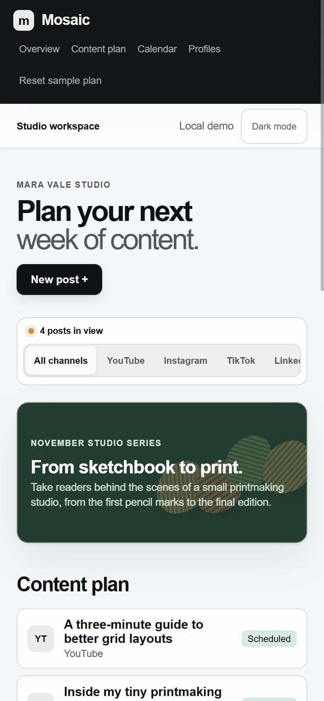

Engineering project · Runtime screenshot
Mosaic Content Planner
Plan creator content across channels with drafts, a calendar and browser-saved edits.
Local portfolio demo
View GitHub sourceRun the local demo
From the prepared project checkout, run these commands and open the address printed by the server. The repository may require access.
cd social
pnpm install --frozen-lockfile
npm run dev -- --hostname 127.0.0.1

Problem
Keep draft ideas and dated editorial plans together across creator channels.
Architecture
Next.js App Router provides routes and page states. A React workspace uses a shared planner module to validate drafts, planned dates and saved data in browser local storage.
Engineering decisions
- Use one validated post model for the editor, content plan and calendar.
- Keep fictional starter content and reset controls available for a self-contained demonstration.
Implemented workflow
- Create a draft, add a planned date and find the post in the calendar.
- Filter posts and fictional profiles by channel and retain edits after reload.
Verified result
The source handoff records four planner tests, lint, TypeScript, production build and desktop/mobile workflow checks. Changes remain in the prepared local checkout.
- Reviewed the project README, source configuration, captured screens and completion handoff in project-2026.
Scope and next steps
- Dates represent editorial plans. Publishing, live metrics, accounts and shared workspaces are unavailable.
- Browser storage is local to the origin and profile. Simultaneous writes across tabs are not atomic.
- The source handoff identifies a framework update as a prerequisite for public hosting.
Technology
Next.js · React · TypeScript · Browser Storage
Preview availability
Static runtime preview. No hosted interactive demo is available. The prepared improvements were verified in a local checkout and have not been pushed to GitHub; public source may differ from these captures. Use the repository documentation for the public version's setup requirements.
← Return to portfolio